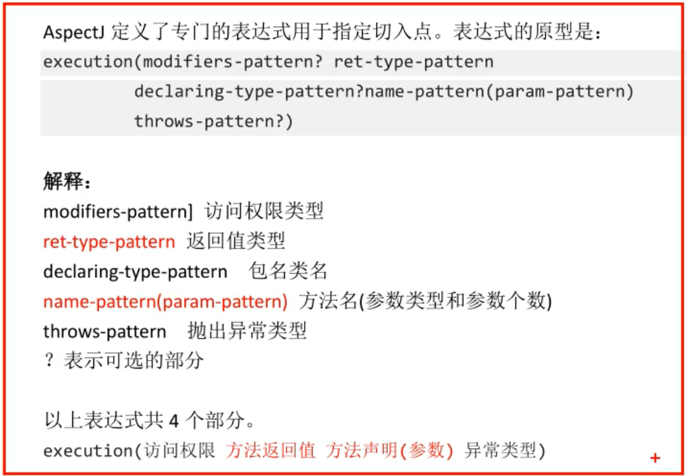

一、动态代理：
1、实现方式：1、JDK动态代理，使用jdk中Proxy，Method，InvocaitonHanderl创建对象，jdk动态代理要求目标类必须实现接口。
2、cglib动态代理，第三方工具库，创建代理工具，原理是继承。通过继承目标类，创建子类，子类就是代理对象。要求目标类不能是final的，方法也不能是final的。
2、动态代理的作用：
1>在目标类源代码不改变的情况下，增加功能。
2>减少代码的重复
3>专注业务逻辑
4>解耦和，让业务功能和非业务功能分离
oop：面向对象编程
二、AOP
面向切面编程，基于动态代理，可以使用jdk，cglib两种代理方式。
AOP就是动态代理的规范化，把动态代理的实现步骤，方式都定义好了，让开发人员用一种统一的方式去用动态代理。
A：切面，给目标类增加的功能，就是切面。
切面的特点：一般都是非业务方法，独立使用。
O：面向，对着
P：编程
面向切面编程要求：
1>需要在分析项目功能时，找出切面
2>合理的安排切面的执行时间
3>合理的安排切面执行的位置，在哪个类，哪个方法增加增强。
术语：
1>Aspect，切面，表示增强的功能，就是一堆代码，完成某些非业务功能，常见的切面有：日志，事务，统计信息，参数检查，权限验证。
2>JoinPoint，连接业务方法和切面的位置
3>Pointcut，切入点，指多个连接点方法的集合。
4>目标对象，给哪个类增加功能，哪个类就是目标对象。
5>Advice，通知，表示切面的功能执行的时间。
描述一个切面三个关键的要素：
1>切面的功能代码，即切面干什么。
2>切面的执行位置，使用Pointcut表示切面执行的位置。
3>切面的执行时间，使用Advice表示时间，在目标方法之前，还是在目标方法之后。
AOP的实现
aop是一个规范，是动态的一个规范化，一个标准
aop的技术实现框架：
1、spring：spring在内部实现了aop规范，能做aop的工作。spring主要在事务处理时使用aop，其他很少用spring的aop实现，因为spring的aop实现比较笨重
2、aspectJ：一个开源的专门做aop的框架。spring框架集成了aspectj框架，通过spring就能使用aspectj的功能。
aspectJ框架实现aop有两种方式：
1、使用xml的配置文件
2、使用注解，项目中一般都使用注解。
三、aspectJ框架的使用
1、切面的执行时间，这个执行时间在规范中叫做Advice（通知，增强）。
aspectj框架中有五个注解
@Before
@AfterReturning
@Around
@AfterThrowing
@After
2、表示切面执行的位置，使用的是切入点表达式。



aspectJ框架使用步骤：


依赖项

aspectJ框架注解：
1、@Aspect，是aspectj框架中的注解
作用：表示当前类是切面类
切面类：给业务方法增加功能的类，在这个类中有切面的功能代码。
位置：类定义的上面
定义切面类中的方法，该方法要求：
1>公共方法public
2>方法没有返回值
3>方法名称自定义
4>方法可以有参数，也可以没有参数
如果有参数，参数不是自定义的，有几个参数类型可以使用。
指定方法的参数：JoinPoint
JoinPoint：业务方法，要加入切面功能的业务方法。
作用是：可以在通知方法中获取方法执行时的信息，例如方法的名称，方法的实参。
如果切面功能中需要用到方法的信息，就加入JoinPoint
JoinPoint参数的值是由框架赋予的，必须是第一个位置的参数

2、@Before：前置通知注解
属性：value，是切入点表达式，表示切面的功能执行的位置。
位置：方法的上面
特点：
1>在目标方法之前先执行
2>不会改变目标方法的执行结果
3>不会影响目标方法的执行
将切面类交给spring容器

<aop:aspectj-autoproxy />标签会把spring容器中所有的目标对象一次性都生成代理对象。
测试类

3、@AfterReturning：后置通知
属性：1、value 切入点表达式
2、returning 自定义的一个变量，表示目标方法的返回值。自定义的变量名必须和通知方法的形参名一样.
位置：在方法定义的上面
特点：1、在目标方法执行之后执行。
2、可以获取到目标方法的返回值，可以根据这个返回值做不同的业务逻辑。
3、可以修改这个返回值。
4、@Around：环绕通知-增强方法有ProceedingJoinPoint参数
方法定义格式：1>public
2>必须有一个返回值，推荐使用Object
3>方法名称自定义
4>方法有参数，固定的参数 ProceedingJoinPoint
属性：value 切入点表达式
位置：方法定义的上面
特点：1、是功能最强的通知。
2、在目标方法的前和后都能增强功能。
3、控制目标方法是否被调用执行。
4、修改原来的目标方法的执行结果，影响最后的调用结果。（程序执行，是将目标方法替换为@Around修饰的方法）
环绕通知，等同于jdk动态代理的InvocationHandler接口
参数：ProceedingJoinPoint 就等同于Method
作用：执行目标方法
作用：执行目标方法
返回值：目标方法的执行结果，可以被修改。
ProceedingJoinPoint类继承JoinPoint，可以获取方法信息。
环绕通知：经常做事务，在目标方法之前开启事务，执行目标方法，在目标方法之后提交事务。
@Around("切入点表达式")
public Object myAround(ProceedingJoinPoint pr){
//实现环绕通知
Object result=null;
//目标方法之前
//执行目标方法
result=pr.proceed();
return result;
}
自己的理解：前置通知，后置通知和环绕通知在实现上的区别
首先 前置通知，后置通知和环绕通知都是使用InvocationHandler接口
前置通知，后置通知是框架定义好的，切面方法和目标方法在生成代理对象的时候，相当于方法的顺序拼接。
环绕通知则是将目标方法替换为@Around修饰的方法。
5、@AfterThrowing：异常通知
方法定义格式：
1>公共方法public
2>方法没有返回值
3>方法名称自定义
4>方法参数，Exception，如果还有就是JoinPoint。
属性：1、value：切入点表达式
2、throwing 自定义的变量，表示目标方法抛出的异常对象，变量名必须和方法的参数名一样
特点：
1>在目标方法抛出异常时执行。
2>可以做异常的监控程序，监控目标方法在执行时是不是有异常，如果有异常，可以发送邮件或者短信进行通知。
6、 @After：最终通知
方法定义格式：
1>公共方法public
2>方法没有返回值
3>方法名称自定义
4>方法没有参数，如果有参数就是 JoinPoint。
属性：value：切入表达式
位置：方法的上面
特点：
1>总是会执行
2>在目标方法之后执行
一般做的是资源的清理工作。类似于finally语句块。
7、@Pointcut：
定义和管理切入点，如果在项目中存在多个切入点是重复的，可以复用的，可以使用@Pointcut
属性：value：切入点表达式
位置：自定义的方法的上面
特点：当使用了@Pointcut定义在一个方法的上面，此时这个方法的名称就是切入点表达式的别名，其他的通知中value属性就可以使用这个方法名称，代替切入点表达式。
在目标类存在接口时，使用的是jdk的动态代理；没有接口时，使用的是cglib动态代理。
如果有接口时，要使用cglib动态代理：
<aop:aspectj-autoproxy proxy-target-class="true" />